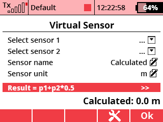

Tato aplikace umožňuje zobrazit výsledek matematických operací aplikovaných až na dvě telemetrické veličiny.
V menu zvolte položku Aplikace - Uživatelské aplikace. Stisknutím klávsy F(3) otevřete dialog pro výběr aplikací. Zde vyberte soubor "V-Sensor".
V menu zvolte položku Časovače/senzory - Údaje na hlavní obrazovce. Zde vytvořte novou položku a vyberte "Virtuální senzor". Aplikace bude mít vlastní pole na displeji.
Zdrojové kódy můžete stáhnout z oficiálního repozitáře JETImodel Lua-Apps GitHub.